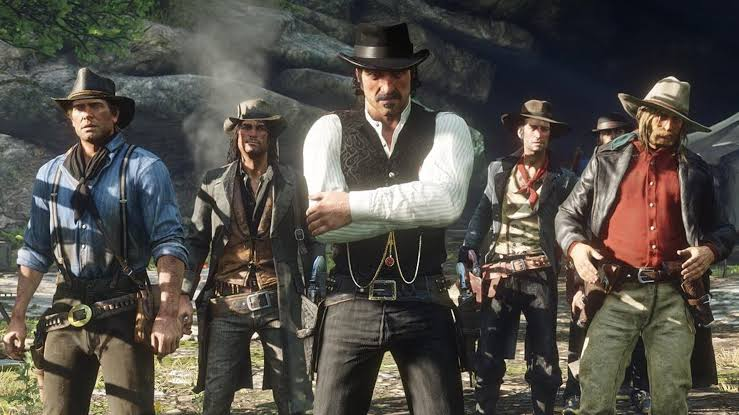
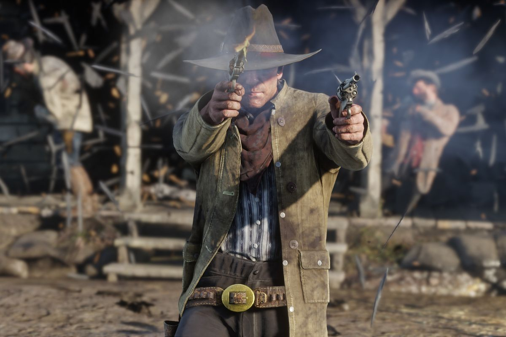

Red Dead Redemption 2 é um jogo de temática Western de ação e aventura em um ambiente mundo aberto. O jogo toma a perspectiva de terceira e primeira pessoa. O jogador controla o personagem Arthur Morgan, um fora-da-lei membro da gangue de Van der Linde.[4] O jogo possui um modo campanha single-player e outro multiplayer online.[5] O jogo traz de volta e refina várias mecânicas do jogo anterior, como o combate, manuseamento de armas, o sistema de honra e outros. Também contém várias atrações a mais, incluindo a habilidade de portar duas armas ao mesmo tempo[6] e outras atividades, como natação.[7] Segundo a desenvolvedora, o jogo possui uma história principal com ao menos 60 horas de duração, algo que requisitou da equipe de produção ao menos 100 horas de trabalho por semana.[8]
Red Dead Redemption II é um jogo eletrônico de ação-aventura western desenvolvido pela Rockstar Studios e publicado pela Rockstar Games. Lançado mundialmente em 26 de outubro de 2018 para PlayStation 4 e Xbox One, é uma prequela de Red Dead Redemption (2010) e o terceiro título da franquia Red Dead.[1][2] Situado em 1899 em uma versão fictícia do oeste dos Estados Unidos, a história gira em torno de Arthur Morgan, um membro da gangue Van der Linde que lida com o declínio do Velho Oeste enquanto tenta sobreviver contra forças governamentais, gangues rivais e outros oponentes. A história também segue o companheiro de gangue John Marston, protagonista do primeiro Red Dead Redemption.[3] Red Dead Redemption II é visto através de perspectivas de primeira e terceira pessoa, e o jogador pode vagar livremente em seu mundo aberto interativo. Elementos de jogabilidade incluem tiroteios, assaltos, caça, cavalgadas, interação com qualquer personagem não-jogável (NPC), e mantendo a classificação de honra do personagem através de escolhas e ações morais. Um sistema de recompensas semelhante ao sistema de “procurado” da franquia Grand Theft Auto governa a resposta dos agentes da lei e dos caçadores de recompensa aos crimes cometidos pelo jogador. Red Dead Online, o modo multijogador online do jogo, foi lançado como uma versão beta em novembro de 2018. Amplamente esperado e comercializado antes de seu lançamento, Red Dead Redemption II quebrou recordes e teve o segundo maior lançamento na história do entretenimento, gerando 725 milhões de dólares em vendas a partir de seu fim de semana de lançamento, vendendo mais de 23 milhões de cópias mundialmente. Foi aclamado pela crítica, que elogiou a sua história, os personagens, o mundo aberto e o nível considerável de detalhes. Red Dead Redemption II foi o jogo que recebeu o maior número de prêmios no The Game Awards 2018, vencendo nas categorias de “Melhor Narrativa”, “Melhor Trilha Sonora”, “Melhor Performance” e “Melhor Design de Áudio”. Além disso, o jogo foi indicado na prestigiosa categoria de “Jogo do Ano”, perdendo para God of War.
Referências: Pitcher, Jenna (9 de outubro de 2013). «Grand Theft Auto 5 smashes 7 Guinness World Records». Polygon. Consultado em 25 de dezembro de 2016 Hamilton, Kirk (24 de setembro de 2013). «Five Ways You Can Make Grand Theft Auto V More Immersive». Kotaku. Consultado em 25 de dezembro de 2016 Krupa, Daniel (4 de novembro de 2014). «Grand Theft Auto 5: A New Perspective». IGN. Consultado em 25 de dezembro de 2016 Simmons, Alex (12 de novembro de 2012). «Grand Theft Auto V: Reinventing the Open-World Rulebook». IGN. Consultado em 25 de dezembro de 2016 Hussain, Tamoor (8 de novembro de 2012). «GTA V world 'is bigger than Red Dead Redemption, San Andreas and GTA 4 combined'». Computer and Video Games. Consultado em 25 de dezembro de 2016. Cópia arquivada em 10 de novembro de 2012 Simmons, Alex (13 de novembro de 2012). «Grand Theft Auto 5's Unseen Mastermind». IGN. Consultado em 25 de dezembro de 2016 Bogenn, Tim; Barba, Rick (2013). Grand Theft Auto V Signature Series Strategy Guide. Estados Unidos: BradyGames. p. 7. ISBN 9780744014679 Bogenn, Tim; Barba, Rick (2013). Grand Theft Auto V Signature Series Strategy Guide. Estados Unidos: BradyGames. p. 10. ISBN 9780744014679 Stuart, Keith (12 de novembro de 2012). «Grand Theft Auto V preview: the inside story». The Guardian. Consultado em 25 de dezembro de 2016 Hoggins, Tom (2 de maio de 2013). «Grand Theft Auto V preview». The Daily Telegraph. Consultado em 25 de dezembro de 2016 Stuart, Keith (3 de maio de 2013). «Grand Theft Auto 5 preview: Rockstar invites you to Los Santos». The Guardian. Consultado em 25 de dezembro de 2016 Hernandez, Patricia (7 de maio de 2015). «The Mystery Of GTA V's Six-Star Wanted Level». Kotaku. Consultado em 25 de dezembro de 2016 Bogenn, Tim; Barba, Rick (2013). Grand Theft Auto V Signature Series Strategy Guide. Estados Unidos: BradyGames. p. 14. ISBN 9780744014679 Sterling, Jim (16 de setembro de 2013). «Review: Grand Theft Auto V». Destructoid. Consultado em 25 de dezembro de 2016 Bogenn, Tim; Barba, Rick (2013). Grand Theft Auto V Signature Series Strategy Guide. Estados Unidos: BradyGames. p. 15. ISBN 9780744014679 Bogenn, Tim; Barba, Rick (2013). Grand Theft Auto V Signature Series Strategy Guide. Estados Unidos: BradyGames. p. 57. ISBN 9780744014679 Reilly, Luke (3 de setembro de 2013). «World's First Hands-on With Grand Theft Auto V». IGN. Consultado em 25 de dezembro de 2016 Petit, Carolyn (2 de maio de 2013). «Grand Theft Auto V: The Making of a Great Heist Sequence». GameSpot. Consultado em 25 de dezembro de 2016 Bertz, Matt (2 de maio de 2013). «The Art Of The Heist In GTA V». Game Informer. Consultado em 25 de dezembro de 2016 MacDonald, Keza (9 de julho de 2013). «What's New in the Grand Theft Auto V Gameplay Trailer». IGN. Consultado em 25 de dezembro de 2016 Weaver, Tim (3 de maio de 2013). «Preview: GTA V rewrites the open-world rulebook... again». Computer and Video Games. Consultado em 25 de dezembro de 2016. Cópia arquivada em 14 de setembro de 2013 Bertz, Matt (2 de maio de 2013). «Running And Gunning In Grand Theft Auto V». Game Informer. Consultado em 25 de dezembro de 2016 Bogenn, Tim; Barba, Rick (2013). Grand Theft Auto V Signature Series Strategy Guide. Estados Unidos: BradyGames. p. 6. ISBN 9780744014679 Aziz, Hamza (2 de maio de 2013). «Grand Theft Auto V: Everything is bigger and better». Destructoid. Consultado em 25 de dezembro de 2016 Cooper, Hollander (28 de novembro de 2014). «Grand Theft Auto V review». GamesRadar. Consultado em 25 de dezembro de 2016. Cópia arquivada em 21 de setembro de 2013 Bertz, Matt (2 de maio de 2013). «Putting Your Personal Stamp On Grand Theft Auto V». Game Informer. Consultado em 25 de dezembro de 2016 Rockstar North (2013). Grand Theft Auto V. PlayStation 3, Xbox 360. Rockstar Games. Fase: "Prólogo" Rockstar North (2013). Grand Theft Auto V. PlayStation 3, Xbox 360. Rockstar Games. Fase: "Agravantes" Rockstar North (2013). Grand Theft Auto V. PlayStation 3, Xbox 360. Rockstar Games. Fase: "Pai/Filho" Rockstar North (2013). Grand Theft Auto V. PlayStation 3, Xbox 360. Rockstar Games. Fase: "Terapia de Casais" Rockstar North (2013). Grand Theft Auto V. PlayStation 3, Xbox 360. Rockstar Games. Fase: "O Reconhecimento da Joalheria" Rockstar North (2013). Grand Theft Auto V. PlayStation 3, Xbox 360. Rockstar Games. Fase: "O Golpe à Joalheria" Rockstar North (2013). Grand Theft Auto V. PlayStation 3,